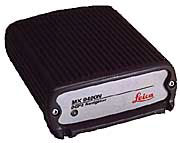

Last update: 21-Oct-2010 23:44 UTC
This driver supports the Magnavox MX4200 Navigation Receiver adapted to precision timing applications. This driver supports all compatible receivers such as the 6-channel MX4200, MX4200D, and the 12-channel MX9212, MX9012R, MX9112.
 Leica Geosystems acquired the Magnavox commercial GPS technology business in February of 1994. They now market and support former Magnavox GPS products such as the MX4200 and its successors.
Leica MX9400N Navigator.
This driver supports two modes of operation, static and mobile, controlled by clock flag 2.
In static mode (the default) the driver assumes that the GPS antenna is in a fixed location. The receiver is initially placed in a "Static, 3D Nav" mode, where latitude, longitude, elevation and time are calculated for a fixed station. An average position is calculated from this data. After 24 hours, the receiver is placed into a "Known Position" mode, initialized with the calculated position, and then solves only for time.
In mobile mode, the driver assumes the GPS antenna is mounted on a moving platform such as a car, ship, or aircraft. The receiver is placed in "Dynamic, 3D Nav" mode and solves for position, altitude and time while moving. No position averaging is performed.
The driver writes each timecode as received to the clockstats file. Documentation for the NMEA-0183 proprietary sentences produced by the MX4200 can be found in MX4200 Receiver Data Format.